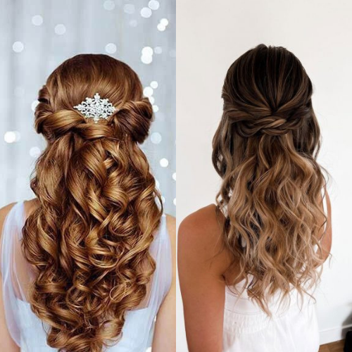
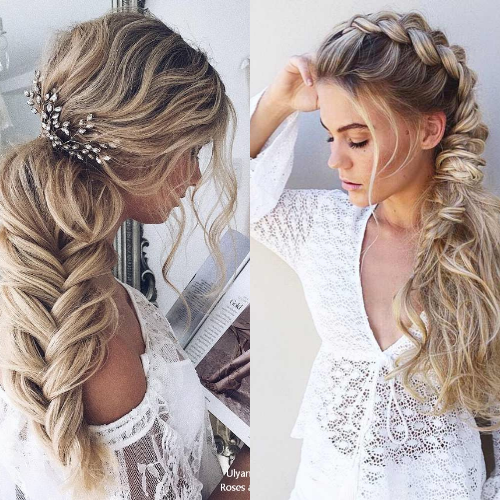
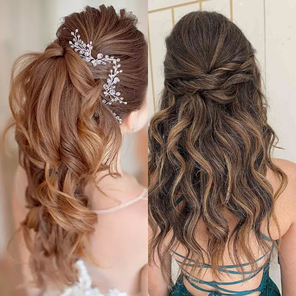
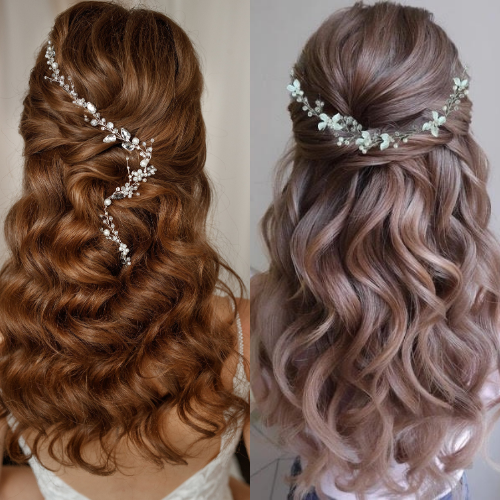

IntroductionProm night is one of the most memorable moments in high school, and having the perfect hairstyle is just as important as picking the right dress. Whether you want a classic updo, soft curls, or a trendy braided style, we’ve gathered the latest prom hair inspo for 2025 to help you look stunning on your special night.
1. Sleek and Elegant PonytailsA sleek, high ponytail is a go-to for a polished and sophisticated look. This year, we’re seeing variations like the bubble ponytail, extra-long extensions, and added hair accessories such as pearls or rhinestones for a glamorous touch.
2. Soft Hollywood WavesFor a timeless and romantic vibe, Hollywood waves never go out of style. The 2025 twist? Deep side parts and glossy finishes for that extra shine. Use a high-quality curling iron and a shine spray to achieve this effortlessly chic style.
3. Braided BeautiesBraids continue to be a top prom hair inspo, with new variations emerging this year. Try a crown braid for an ethereal touch, or go bold with a chunky fishtail braid. Mixing braids with loose curls creates a dreamy, bohemian effect.
4. Messy Yet Chic UpdosIf you prefer an elegant yet effortless look, a tousled updo is perfect. Think loose chignons, wispy strands framing the face, and subtle hairpins for a delicate, fairy-tale finish. This style complements both modern and vintage-inspired dresses.
5. Half-Up, Half-Down MagicA half-up, half-down hairstyle is ideal for those who want the best of both worlds. Add soft waves or curls to create volume, and embellish with delicate clips, bows, or tiny braids for an enchanting effect.
6. Edgy and Modern Short StylesShort hair can be just as glamorous for prom! Consider sleek bobs with deep side parts, voluminous curls, or accessorizing with statement headbands. Adding texture with waves or soft curls can elevate the look for a special occasion.
7. Retro-Inspired GlamVintage hairstyles are making a comeback! Victory rolls, pin curls, and voluminous bouffants inspired by the ‘50s and ‘60s are great options if you love a classic Hollywood aesthetic with a modern twist.
Always do a trial run before prom night to ensure your hairstyle complements your dress and makeup.
Use high-quality hair products to maintain your style all night long.
Consider hair extensions or accessories to enhance your chosen look.
Book a professional stylist in advance or practice DIY tutorials for a flawless finish.
Get ready to turn heads on your prom night with these stunning hair ideas! Whether you go for a classic or trendy look, confidence is your best accessory.
   